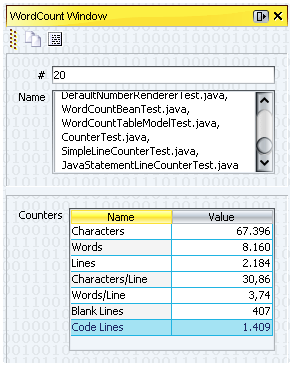

)
.
)
.
The WordCount Module counts the number of characters, words, and lines of java files.
Moreover it counts the number of blank lines, and the number of code lines (aka SLOC).
Select files, or folders from the explorer view, and invoke the WordCounting action. In the WordCount window the count information is displayed.
You can initiate calculating the count information by using the
toolbar action ()
.
The calculated count informations are presented in the WordCount window.
You can open the WordCount window using
Window|OpenWordCountWindow
( )
.
)
.
The WordCount window posses a toolbar presenting following action:
)
 )
)
A sample WordCount window:
Some explanation about Counter values:
Counting the number of code lines is done in a very simple way.
Following patterns are used for detecting if a line is a comment:
\s*[*].*, \s*//.*, \s*/[*].*
Code lines matching this pattern are ignored:
\s*[:?=(){};]\s*.